Cigar Review: Trinidad Reyes
This is a pretty small cigar. I thought it would be giving me a shorter time of smoke like 15-20 min because of the size, but it lasted about 40 minutes for me.
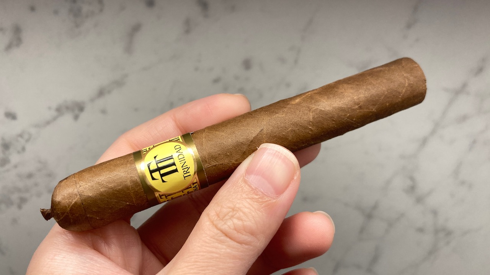 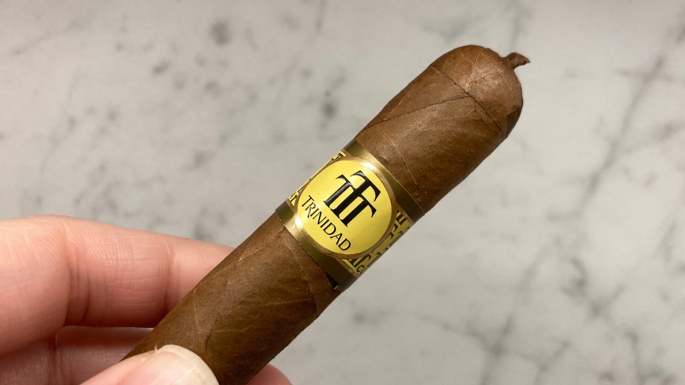
The size of this cigar is at a length of 11 cm with a ring gauge of 40. It's a pretty compact form. The draw is a bit on the firm side, but acceptable to me. The pigtail is just really cute ❤
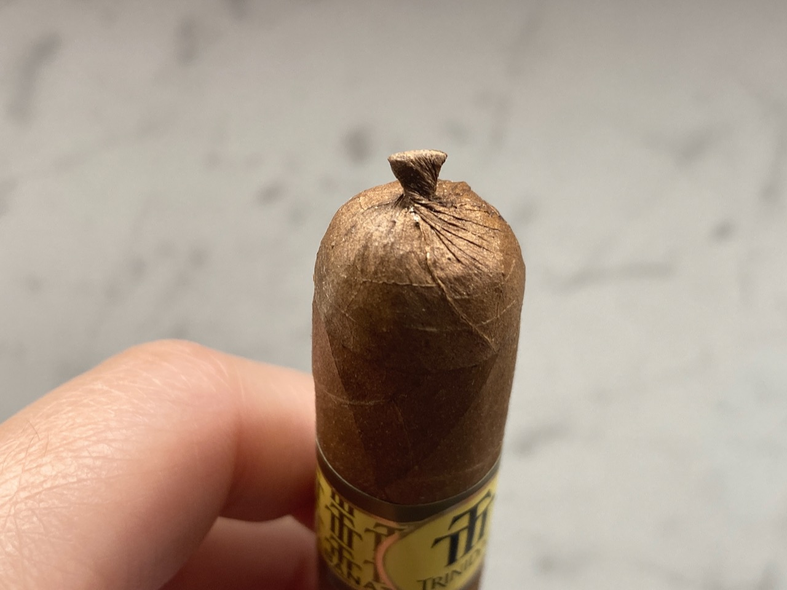 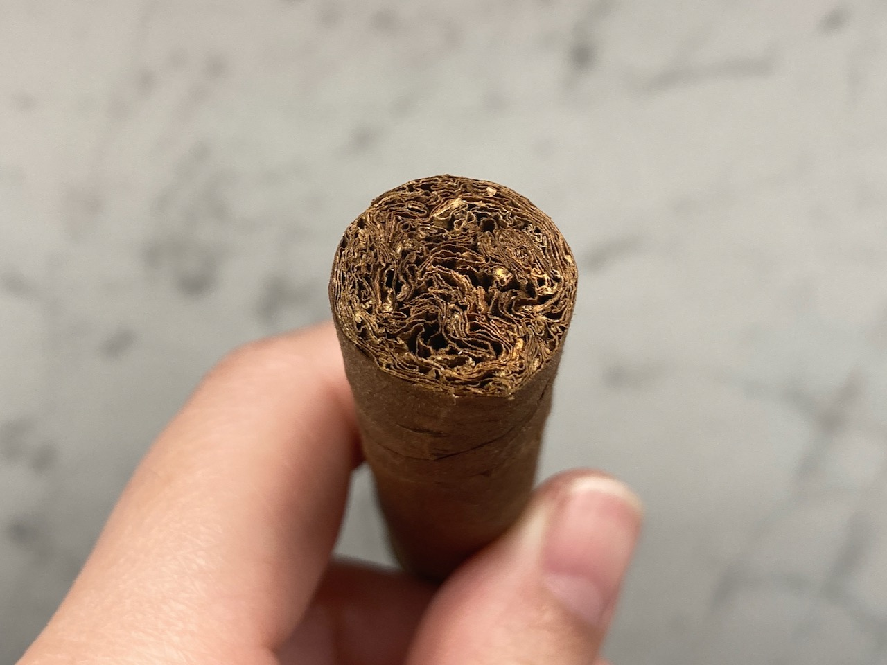
I had this one sitting in my humidor (cigar storage box) for a few weeks before I cut it. I was surprised by how the pieces stayed together for a good humid cigar. I believe all the ones that I had before were too dry so the cap just instantly shattered everywhere. This cut, however, was extremely clean. 🧹 ✨
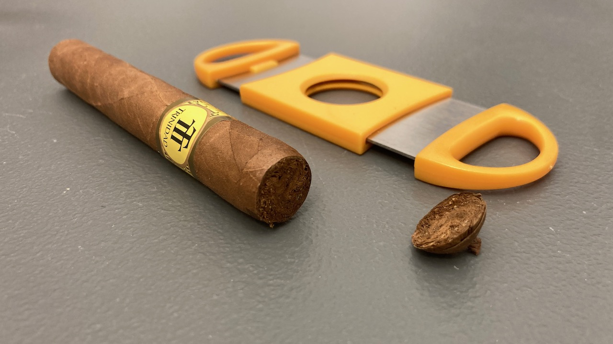 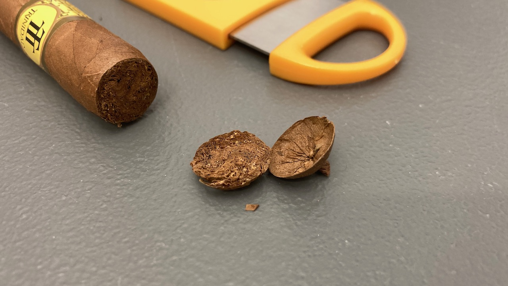
The first few draws were smooth and nutty at the start. Fairly enjoyable. I was also managed to light everything up evenly this time. I think it is just overall easier to toast a smaller cigar. It did not take me too long or gave me a hard time.
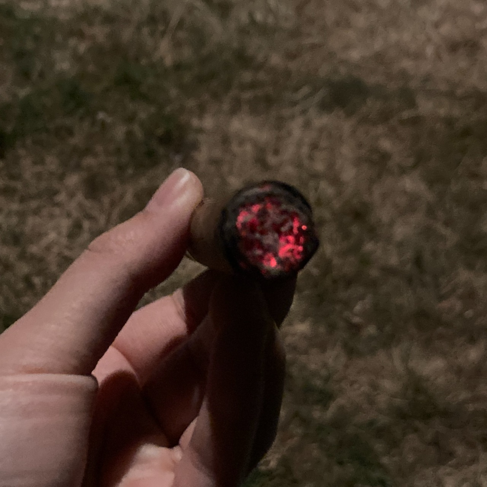 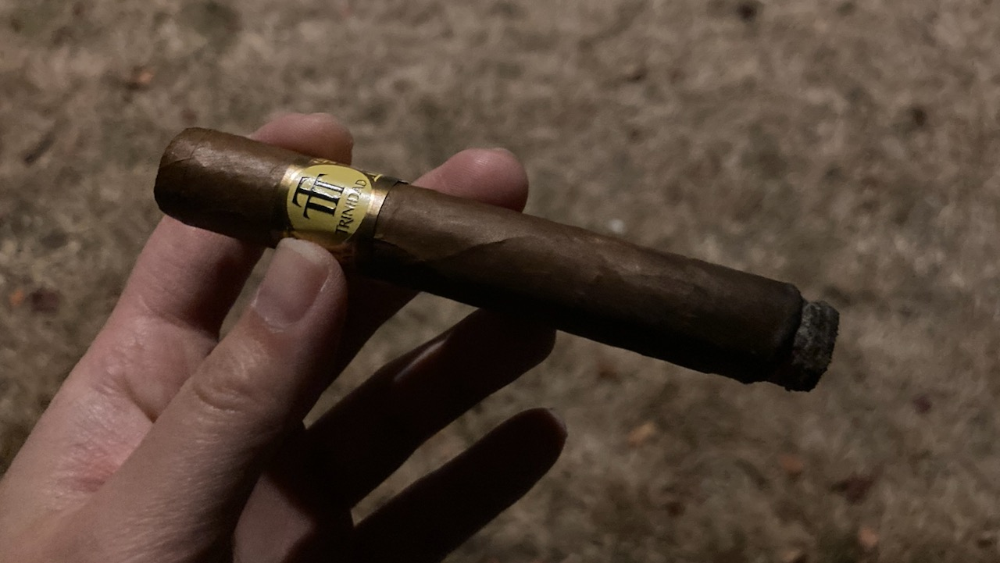 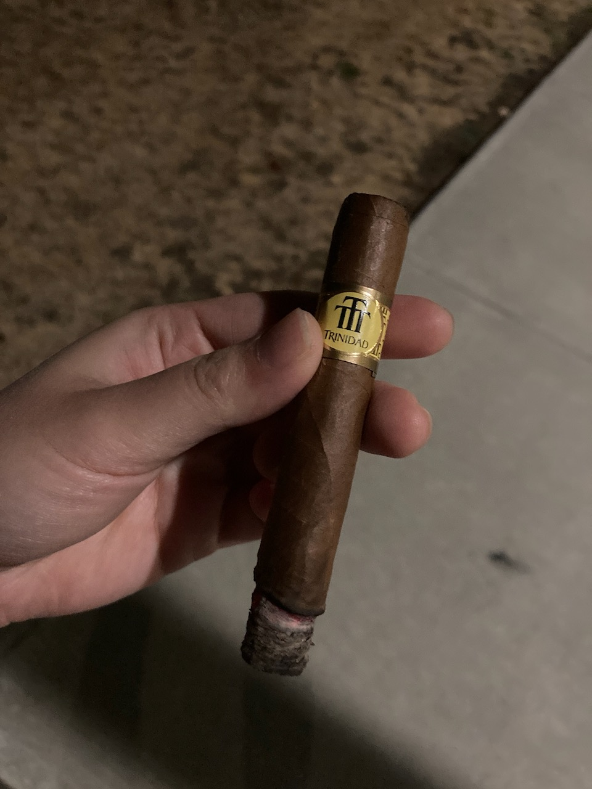
The ash was more on the darker side. However, it did not give me any weird or unpleasant taste as Hoyo de Monterrey - Rio Seco. The burn was not too bad. It was not windy, but I was walking. The burn line didn't grow too crooked or too badly that needed to be constantly on watch.
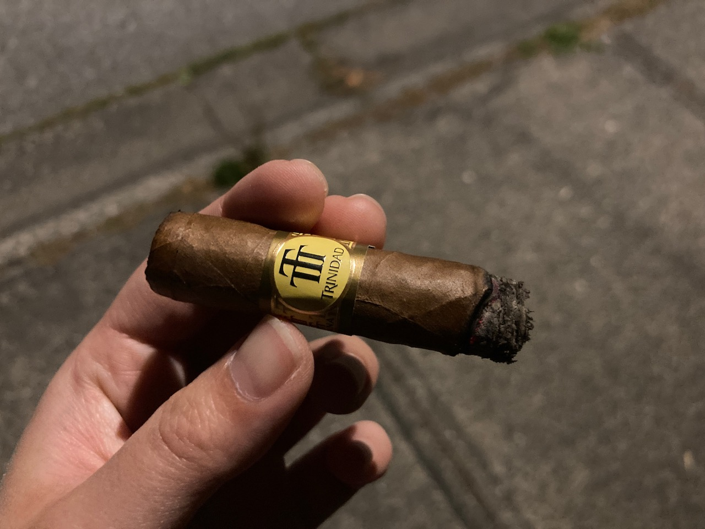
Towards the end of the cigar, it gave me a woody, leathery, spice. I ended it earlier because I don't particularly enjoy that spice and I actually had an appointment to run to. It was a chill night and a relaxing smoke though. I enjoy my time thoroughly with it. 👥
Even though it was a chill night and I ended the cigar earlier, I still missed my appointment. 😅 I was walking around a neighbourhood that I thought I was familiar with, but apparently it wasn't true and that I got lost. I kept going back in a mysterious loop at least twice until I gave up and ask Google map for help. It took me more than double the time to get home, but I made it back safely. 🥴
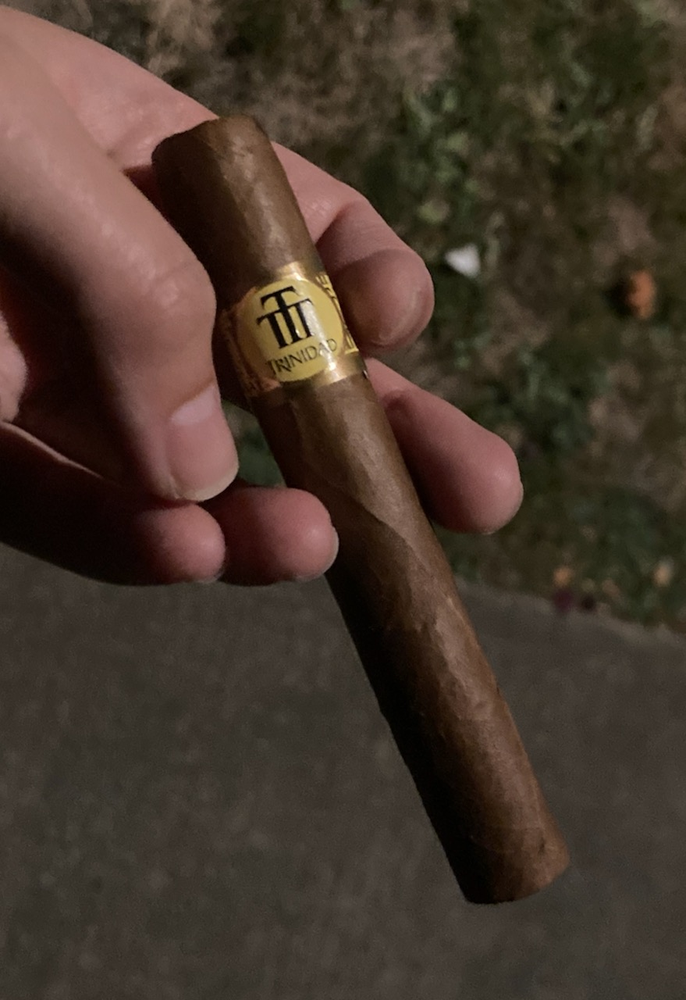 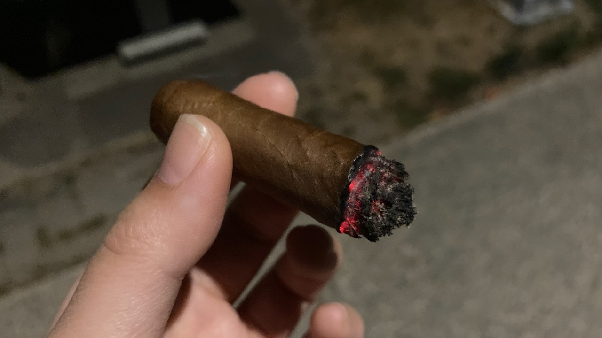
Anyways, that's all I have for you today. If you enjoy reading this post, please consider supporting this website so I can share more of my cigar journey with you. Thank you and I hope you will have a wonderful day! 🌟